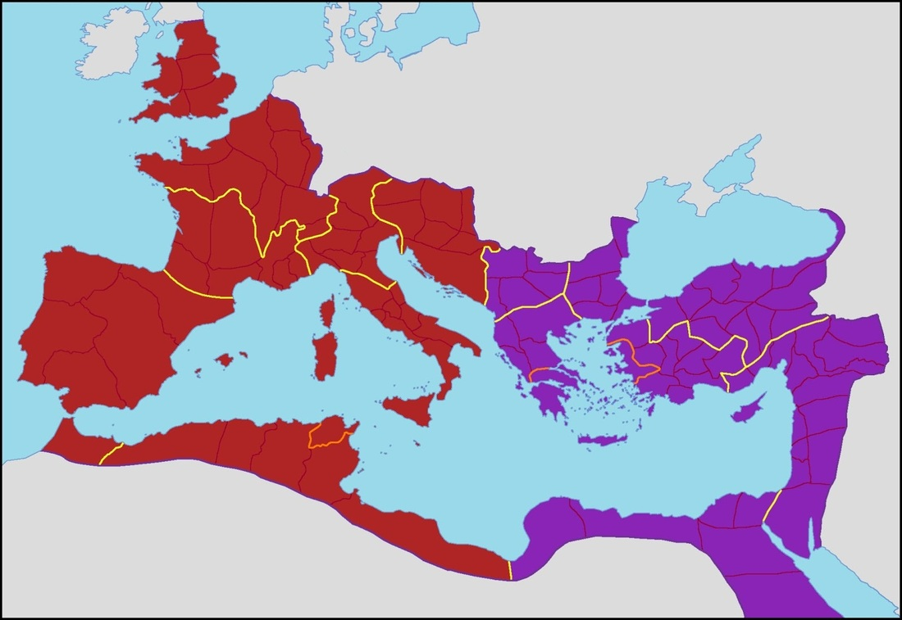

Één van de belangrijkste oorzaken van de val van Rome was haar eigen opsplisting.
Het werd verdeeld in het West Romeinse Rijk en het Oost Romeinse Rijk.
Het gedeelte dat vooral bestond uit west Europa, noord Europa en een groot deel van noord Afrika,
Werd het West Romeinse Rijk. De hoofdstad hiervan was Ravenna inplaats van Rome zelf.
In de kaart hieronder was het rode gebied van het West Romeinse Rijk.

Het West Romeinse Rijk heeft nog vele keizers gehad, met als laatste Augustulus.
Het westen viel echter nadat de Visigothen Rome hadden geplunderd en veroverd.
Hiermee kwam een eind aan het westen, maar het oosten bleef nog een lange tijd bestaan.
Na de val van het West Romeinse Rijk kwam er nog een expeditie naar Afrika om opnieuw Rome te stichten.
Dit lukte echter niet.
Het Oost Romeinse Rijk had als hoofdstad Constantinopel, tegenwoordig Istanboel.
Het Oost Romeinse Rijk had niet dezelfde keizer als het Westen, en één van de meest succesvolste was zelfs vroeger een prostituee.
Op de Kaart hieronder zie je het Oost Romeinse Rijk in paars, ook de nationale kleur.
Na de val van het West Romeinse Rijk, stuurde het Oost Romeinse Rijk een expeditie om het Westen opnieuw op te bouwen, wat mislukte.
Het Oosten bleef echter nog lang bestaan maar kreeg een andere naam na de val van Rome: Byzantium.
De Turken vielen echter Anatolia, groot deel van Turkije, binnen en hiermee veloor Byzantium haar grip op het midden oosten.
Hierdoor vroegen ze om hulp bij de paus, die toen de eerste kruistocht uitriep.
In dit tijdperk kwamen vele bekende historische personages voor, zoals Richard Leeuwenhart.
Het lukte echter niemand om de Turken te verdrijven en één kruistocht, geörganiseerd door venetië,
viel zelfs de stad Constantinopel aan. Ze namen dit in en hierdoor had Byzantium alleen nog maar macht in griekenland.
De Turken werden uiteindelijk verenigd onder de vlag van de Ottomanen en veroverde Constantinopel.
Rond 1450 vielen de Ottomanen ook de Byzantijnen aan en veroverde al hun gebied.
Hierdoor kwam er een eind aan niet alleen Byzantium, maar aan heel het Romeinse Rijk.